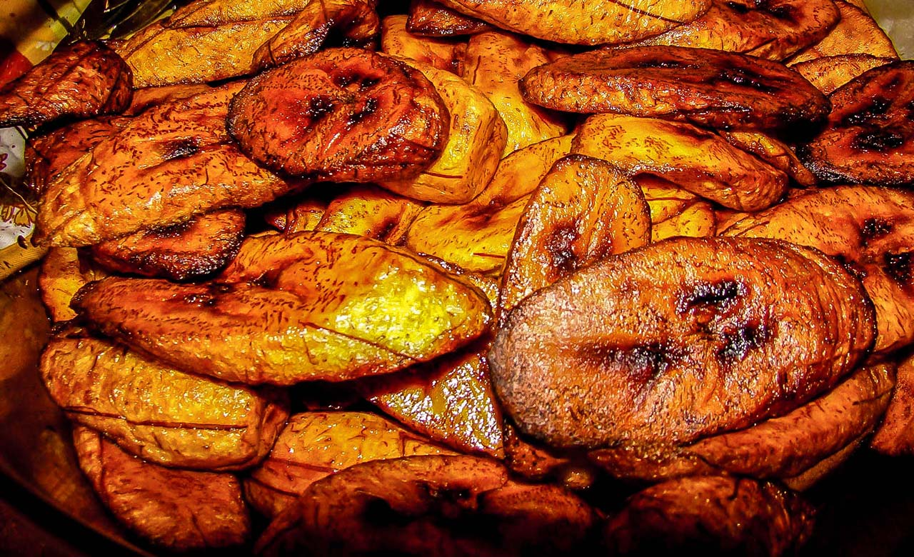
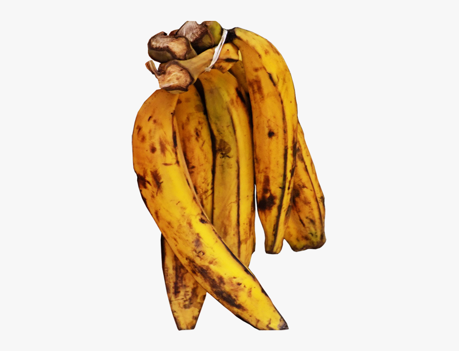
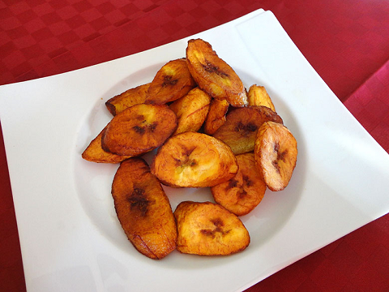

|  | WEST AFRICAN COUNTRIES:
|
Alloco's Origin |
Today we are going to see one of the most popular dish in West Africa.
Fried plantain is originally popular in this part of the Africa. Fried plantain has different names in various countries.
When visiting countries such as Ivory Coast, Ghana, Togo, Benin, Nigeria, Cameroon, you will come accross this excellent dish that taste so delicious.
Each of this countries eat it in their own ways but it is mostly eaten with fried chicken, fried fish or even boiled eggs.
|
|||
|

|
|
|

|
Every West African Country has its own way of making fried plantain but the major ingredients specified above are constant.
you need to really have a taste of the fried plantain if you decide to travel to any West African Country.